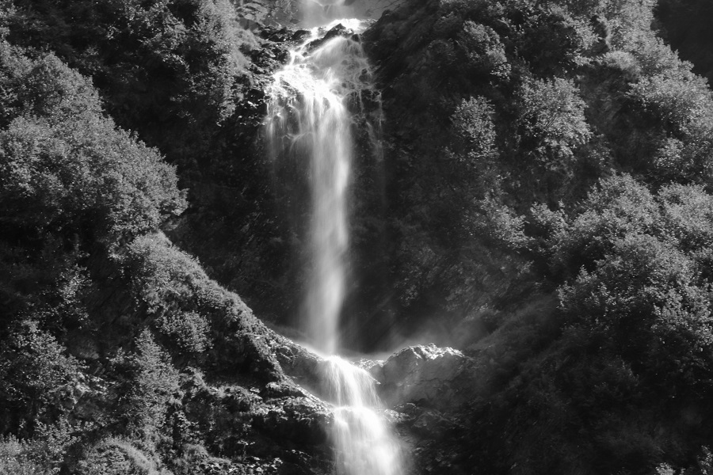

Pictures from Alaska!
Below are some pictures I took in Alaska a few summers ago. These images are interactive, as I have learned how to make them interactable through Javascript. Click or hover over the images to see what happens!
Click the image below to see it in color!
Photo taken by Michel Thomas near Valdez, Alaska.
Hover over the image below to see different animals in Alaska!

The first image shows the Snowshoe Hare! These cute creatures have white fur in winter and brown fur in the summer! The second image is of an Arctic ground squirrel that was scurrying around a trail in Denali National Park. The third image is of a sledding dog named Topo. Although sled dogs aren't used as often, they still help haul construction supplies in the winter.
All photos were taken by Michel Thomas